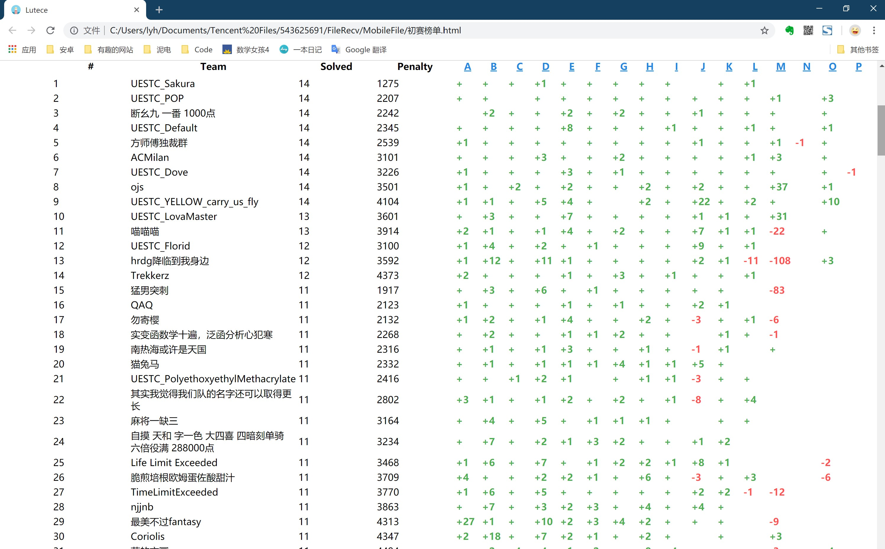

高中参加过 OI，大学里面自然对 ACM 比较感兴趣。在自我介绍的时候提了一句，有没有想一起参加 ACM 的还被同学听成了 SM。
但是在大一上的时候，因为闲着没事做，就又报了一个算法研究小组。两边都是很肝的。得放弃一边。我觉得 ACM 太功利了，就选择了算法小组。
当时的观点是这样的：
- ACM 太功利了，现在参加的人越来越多，也很大程度上是为了拿奖；
- ACM 很多做法太套路化了，为了最快的解题，甚至需要背代码；
- 和高考、其他竞赛一样，一考定终身的形式太残酷了，要是发挥失常，就只有等下一年、等不起的就必须放弃。
但是不巧的是，大一下的时候，算法小组组会的时间和程序设计课程 完 全 冲 突。于是那边就不得不咕咕咕了。
正好 ACM 这边，学校在准备校赛，我就和室友一起去参加。
初赛因为考的比较基础，甚至有算矩阵行列式的题。当时好像是 17 个题，我们两个人（另外一个室友咕咕咕了）做了 11 个题。

决赛题很难，但是我们三个人各做了一个题，摸了一个校二等奖。
我做的是一个枚举所有情况的暴力题，数据范围 10，正好 $O(n!)$，暴力莽过，拿了一血。
后来就发现其实大家也不是那么强，说不定还是可以去参加一下，摸一个奖的。然后就又入坑了。
大一下的暑期前集训里面，两周一个专题，每个专题有10-20个题，包括了很多我在 OI 没有接触过的算法，比如线段树、树状数组、前缀和、仅仅听过名字的 KMP、AC自动机等等等等。可以说是在那段时间学到了很多东西了很多新知识。不过那段时间的基础学科就不怎么样了。
后来顺便就参加了暑期集训，因为是打算拿奖的，就得参加比赛，然后进校队 blah blah 的。
一开始感觉表现还可以，能够偶尔几名，但是集训后期就慢慢掉下去了，掉到了26名。
感觉这段时间每天中午加下午五小时队内赛，晚上累的不想补题（不想思考，但是会强迫自己去补一些小的知识点，补题就算了，学新的算法也不行，头晕），由于室友每天两点~四点睡，我也很难早睡，每天起的很晚，也没有时间补题。导致我每天说“明天必补线段树（莫队）”，但是都没有补。这么想想，相同的时间里，暑期集训学到的东西甚至没有我暑期前集训在课余时间学的更多（也可能是暑期前集训就是专门学知识，暑期集训就是专门打比赛练手感，而我前期太摸了，导致后期就很废物）。然后作息也比较奇怪，不能午觉，每天被迫晚睡晚起，比赛的状态也越来越差。
这样的状态，加上本来就没学到什么大的知识点，于是就不想参加二轮集训了，也不想继续打 ACM 了，毕竟前面提到的三个原因还是有一点影响的。
现在我在乐山的家里敲着这篇文章，也算是给我的 ACM 生涯画一个句号吧。